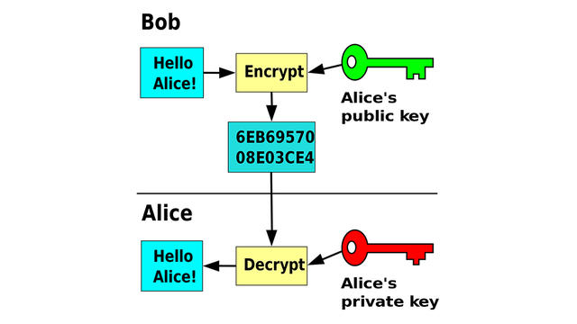
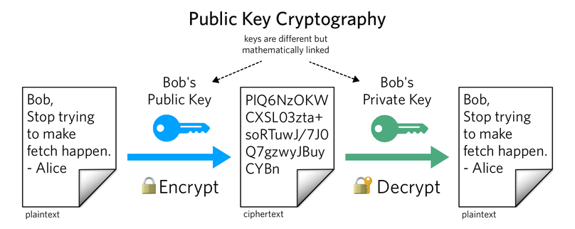
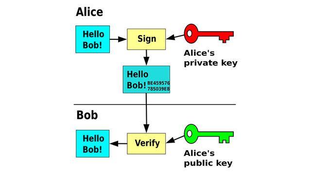

1. HTML basis
HTML staat voor Hypertext Markup Language. Met HTML bepaal je de inhoud en de structuur van een webpagina: titels, paragrafen, links, afbeeldingen, lijsten, tabellen, formulieren, …
HTML is geen programmeertaal. Je kan er niet mee rekenen, beslissingen nemen of herhalen. Het is een markup language: je markeert stukken tekst zodat de browser weet wat elk stuk betekent.
In dit hoofdstuk leer je:
-
hoe een browser een HTML-bestand omzet naar een webpagina;
-
wat tags, elementen en attributen zijn;
-
hoe een HTML-document opgebouwd is;
-
de belangrijkste elementen: titels, tekst, links, afbeeldingen, lijsten, tabellen en formulieren;
-
hoe je een pagina opdeelt met semantische elementen.
1.1. Hoe werkt een webpagina?
Wanneer je naar een website surft, gebeurt er het volgende:
-
Je browser (Chrome, Firefox, Edge, Safari, …) vraagt een pagina op aan een webserver.
-
De webserver stuurt een tekstbestand terug met de extensie
.html. -
De browser leest dat bestand regel per regel en bouwt er een webpagina mee op.
HTML wordt dus niet gecompileerd: de browser interpreteert het bestand. Omdat HTML gewoon tekst is, kan je het schrijven in eender welke teksteditor.
HTML volgt een standaard die afgesproken wordt tussen de makers van browsers. Vandaag gebruiken we HTML5.
1.1.1. Je werkomgeving
Je kan HTML schrijven in Kladblok, maar een code-editor maakt het veel makkelijker. In deze cursus gebruiken we Visual Studio Code.
-
Maak een map aan voor je project, bijvoorbeeld
mijn-website. -
Open die map in VS Code via File → Open Folder.
-
Maak een nieuw bestand
index.html. -
Typ
!en druk op kbd:[Tab]: VS Code vult de standaardstructuur voor je in. -
Open het bestand in je browser (dubbelklik in de verkenner), of installeer de extensie Live Server zodat de pagina automatisch vernieuwt wanneer je opslaat.
De startpagina van een website heet bijna altijd index.html. Een webserver toont dat bestand automatisch als je een map opent.
|
1.2. Tags, elementen en attributen
1.2.1. Tags
HTML werkt met tags. Een tag begint met < en eindigt met >.
De meeste tags komen in paren: een openingstag en een sluitingstag. De sluitingstag heeft een /.
<p>Dit is een paragraaf.</p>De openingstag, de inhoud en de sluitingstag samen noemen we een element.
<h1> (1)
Grote titel (2)
</h1> (3)| 1 | De openingstag. |
| 2 | De inhoud van het element. |
| 3 | De sluitingstag. |
Sommige elementen hebben geen inhoud en dus ook geen sluitingstag. Dit zijn lege elementen (void elements), bijvoorbeeld:
<br>
<hr>
<img src="kat.jpg" alt="Een slapende kat">1.2.2. Nesten
Elementen kunnen in andere elementen zitten. We zeggen dan dat ze genest zijn. Het binnenste element moet altijd eerst gesloten worden.
<p>Dit is <strong>heel belangrijk</strong>.</p> <!-- juist -->
<p>Dit is <strong>heel belangrijk</p>.</strong> <!-- fout! -->Spring genest HTML altijd in met een tab of twee spaties. Zo zie je in één oogopslag welk element in welk ander element zit.
1.2.3. Attributen
Een attribuut geeft extra informatie aan een element. Attributen staan altijd in de openingstag, in de vorm naam="waarde".
<a href="https://www.wikipedia.org">Naar Wikipedia</a>
<img src="f16.jpg" alt="Een F-16 in de lucht" width="300">-
hrefbij een link bepaalt waar de link naartoe gaat. -
srcbij een afbeelding bepaalt welk bestand getoond wordt. -
altgeeft een beschrijving van de afbeelding. -
widthbepaalt de breedte in pixels.
Een attribuut mag maar één keer voorkomen per element.
1.2.4. Commentaar
Commentaar wordt niet getoond in de browser. Je gebruikt het om notities in je code te zetten.
<!-- Dit is commentaar. De bezoeker ziet dit niet. -->1.3. De structuur van een HTML-document
Elk HTML-document heeft dezelfde basisstructuur:
<!DOCTYPE html> (1)
<html lang="nl"> (2)
<head> (3)
<meta charset="UTF-8"> (4)
<meta name="viewport" content="width=device-width, initial-scale=1.0"> (5)
<title>Mijn eerste website</title> (6)
</head>
<body> (7)
<h1>Welkom!</h1>
<p>Dit is mijn eerste webpagina.</p>
</body>
</html>| 1 | Het doctype vertelt de browser dat dit een HTML5-document is. Dit staat altijd op de eerste regel. |
| 2 | Het html-element omvat de hele pagina. Met lang="nl" geef je aan dat de pagina in het Nederlands is. |
| 3 | De head bevat informatie over de pagina. Die wordt niet in de pagina zelf getoond. |
| 4 | charset="UTF-8" zorgt ervoor dat speciale tekens zoals é, ë en € juist getoond worden. |
| 5 | De viewport zorgt ervoor dat je pagina goed schaalt op een smartphone. |
| 6 | De title verschijnt in het tabblad van de browser en in de zoekresultaten van Google. |
| 7 | In de body staat alles wat de bezoeker te zien krijgt. |
1.4. Tekst
1.4.1. Titels
Er zijn zes niveaus van titels: h1 tot en met h6. h1 is de belangrijkste (en grootste) titel.
<h1>Titel van de pagina</h1>
<h2>Hoofdstuk</h2>
<h3>Onderdeel van een hoofdstuk</h3>Gebruik per pagina één h1, en sla geen niveaus over (dus niet van h2 meteen naar h4).
Kies een titel op basis van zijn betekenis, niet op basis van zijn grootte: de grootte pas je later aan met CSS.
1.4.2. Paragrafen en regeleinden
<p>Dit is een paragraaf. Een paragraaf begint altijd op een nieuwe regel.</p>
<p>Dit is een tweede paragraaf.<br>Na de br-tag begint een nieuwe regel.</p>
<hr>
<p>Boven deze paragraaf staat een horizontale lijn.</p>
Extra spaties en enters in je HTML-code worden door de browser genegeerd. Tien spaties achter elkaar worden er één. Wil je een nieuwe paragraaf, gebruik dan een nieuwe p.
|
1.4.3. Tekst benadrukken
<p>Dit is <strong>belangrijk</strong> en dit is <em>benadrukt</em>.</p>
<p>H<sub>2</sub>O en 10<sup>3</sup></p>| Element | Betekenis | Standaard weergave |
|---|---|---|
|
belangrijke tekst |
vet |
|
benadrukte tekst |
cursief |
|
subscript |
lager en kleiner |
|
superscript |
hoger en kleiner |
1.5. Links
Een link maak je met het a-element (van anchor). Het href-attribuut bepaalt het doel.
<!-- Absolute link: een volledig webadres -->
<a href="https://www.vrt.be">Naar de VRT</a>
<!-- Relatieve link: een ander bestand in je eigen website -->
<a href="contact.html">Contact</a>
<a href="fotos/vakantie.html">Vakantiefoto's</a>
<!-- Openen in een nieuw tabblad -->
<a href="https://www.google.be" target="_blank">Google</a>
<!-- Een e-mail versturen -->
<a href="mailto:info@school.be">Mail ons</a>
<!-- Naar een plaats op dezelfde pagina springen -->
<a href="#contact">Ga naar contact</a>
...
<h2 id="contact">Contact</h2>1.5.1. Absolute en relatieve paden
Een absoluut pad bevat het volledige adres, inclusief https://.
Een relatief pad vertrekt vanaf de map waarin je huidige bestand staat.
Stel dat je website deze structuur heeft:
mijn-website/
├── index.html
├── contact.html
└── fotos/
├── vakantie.html
└── strand.jpg
| Vanuit | Naar | Relatief pad |
|---|---|---|
|
|
|
|
|
|
|
|
|
|
|
|
../ betekent: ga één map naar boven.
Gebruik in bestandsnamen geen spaties en geen hoofdletters. Schrijf mijn-fotos.html in plaats van Mijn Fotos.html. Op een webserver is Foto.jpg niet hetzelfde als foto.jpg.
|
1.6. Afbeeldingen
<img src="fotos/strand.jpg" alt="Een zonnig strand met parasols" width="400">-
src(source): het pad naar de afbeelding. Dit kan relatief of absoluut zijn. -
alt(alternative text): een beschrijving van de afbeelding. Die wordt getoond als de afbeelding niet kan laden, en voorgelezen door schermlezers voor blinde en slechtziende bezoekers. Hetalt-attribuut is verplicht. -
widthenheight: de afmetingen in pixels. Geef er maar één op, dan blijven de verhoudingen juist.
Gebruik voor foto’s .jpg, voor logo’s en afbeeldingen met transparantie .png of .svg, en voor moderne, kleine bestanden .webp.
Een afbeelding kan ook een link zijn:
<a href="index.html">
<img src="logo.png" alt="Logo - terug naar de startpagina">
</a>1.7. Lijsten
1.7.1. Ongeordende lijst
Een ongeordende lijst (unordered list) toont bolletjes.
<ul>
<li>Melk</li>
<li>Brood</li>
<li>Kaas</li>
</ul>1.7.2. Geordende lijst
Een geordende lijst (ordered list) toont nummers.
<ol>
<li>Verwarm de oven voor.</li>
<li>Meng de ingrediënten.</li>
<li>Bak 25 minuten.</li>
</ol>1.7.3. Geneste lijst
Een lijst kan in een ander li-element zitten:
<ul>
<li>Fruit
<ul>
<li>Appel</li>
<li>Peer</li>
</ul>
</li>
<li>Groenten</li>
</ul>1.8. Tabellen
Met een tabel toon je gegevens in rijen en kolommen.
<table>
<thead> (1)
<tr> (2)
<th>Naam</th> (3)
<th>Klas</th>
<th>Punten</th>
</tr>
</thead>
<tbody> (4)
<tr>
<td>Emma</td> (5)
<td>5A</td>
<td>17</td>
</tr>
<tr>
<td>Noah</td>
<td>5B</td>
<td>15</td>
</tr>
</tbody>
</table>| 1 | thead: de hoofding van de tabel. |
| 2 | tr (table row): een rij. |
| 3 | th (table header): een hoofdingscel. Die wordt standaard vet en gecentreerd getoond. |
| 4 | tbody: de gegevens van de tabel. |
| 5 | td (table data): een gewone cel. |
| Gebruik tabellen enkel voor gegevens, niet om je pagina in kolommen te verdelen. Voor de lay-out gebruik je CSS (zie hoofdstuk CSS). |
1.9. Formulieren
Met een formulier kan de bezoeker gegevens invullen.
<form action="verzenden.php" method="post"> (1)
<label for="naam">Naam</label> (2)
<input type="text" id="naam" name="naam" required> (3)
<label for="email">E-mail</label>
<input type="email" id="email" name="email">
<label for="leeftijd">Leeftijd</label>
<input type="number" id="leeftijd" name="leeftijd" min="12" max="99">
<p>Richting:</p>
<input type="radio" id="it" name="richting" value="it">
<label for="it">IT</label>
<input type="radio" id="wet" name="richting" value="wetenschappen">
<label for="wet">Wetenschappen</label>
<input type="checkbox" id="nieuwsbrief" name="nieuwsbrief">
<label for="nieuwsbrief">Ik wil de nieuwsbrief ontvangen</label>
<label for="klas">Klas</label>
<select id="klas" name="klas"> (4)
<option value="5a">5A</option>
<option value="5b">5B</option>
</select>
<label for="bericht">Bericht</label>
<textarea id="bericht" name="bericht" rows="4"></textarea>
<button type="submit">Verzenden</button>
</form>| 1 | action bepaalt naar waar de gegevens gestuurd worden, method hoe. Zonder server gebeurt er (nog) niets met de gegevens. |
| 2 | Een label beschrijft een invoerveld. Het for-attribuut verwijst naar de id van het veld. Klik je op het label, dan wordt het veld geselecteerd. |
| 3 | required maakt het veld verplicht: de browser verstuurt het formulier pas als het ingevuld is. |
| 4 | Een select toont een keuzelijst. |
Enkele nuttige type-waarden voor input:
| Type | Gebruik |
|---|---|
|
gewone tekst |
|
e-mailadres (de browser controleert de vorm) |
|
wachtwoord (tekens worden verborgen) |
|
getal |
|
datum (met een kalender) |
|
kleurkiezer |
|
één keuze uit meerdere opties (zelfde |
|
aanvinken |
1.10. Een pagina indelen
1.10.1. div en span
div en span hebben geen betekenis. Je gebruikt ze om stukken inhoud te groeperen, zodat je ze later met CSS kan opmaken.
-
divis een blokelement: het begint op een nieuwe regel en neemt de volledige breedte in. -
spanis een inline element: het blijft in de lopende tekst staan.
<div>
<p>Een paragraaf met een <span>speciaal woord</span> erin.</p>
</div>1.10.2. Semantische elementen
HTML5 heeft elementen die wél een betekenis hebben. Ze vertellen de browser, zoekmachines en schermlezers welke rol een stuk van de pagina speelt.
<body>
<header>
<h1>Bakkerij De Gouden Korst</h1>
<nav>
<a href="index.html">Home</a>
<a href="producten.html">Producten</a>
<a href="contact.html">Contact</a>
</nav>
</header>
<main>
<section>
<h2>Ons aanbod</h2>
<article>
<h3>Desembrood</h3>
<p>Elke ochtend vers gebakken.</p>
</article>
</section>
</main>
<footer>
<p>© 2026 Bakkerij De Gouden Korst</p>
</footer>
</body>| Element | Betekenis |
|---|---|
|
kop van de pagina of van een onderdeel (logo, titel) |
|
navigatiemenu |
|
de hoofdinhoud; maar één per pagina |
|
een thematisch onderdeel, meestal met een eigen titel |
|
een zelfstandig stuk inhoud (een blogbericht, een product, …) |
|
bijkomende informatie naast de hoofdinhoud |
|
voettekst (copyright, contactgegevens) |
Gebruik een semantisch element als er een past, en een div enkel als er geen past.
1.10.3. Speciale tekens
Sommige tekens hebben een speciale betekenis in HTML. Om ze te tonen, gebruik je een entity:
| Entity | Teken |
|---|---|
|
< |
|
> |
|
& |
|
© |
|
spatie waarop niet afgebroken wordt |
1.11. Fouten opsporen
-
Ontwikkelaarstools: klik met de rechtermuisknop op een element in de browser en kies Inspecteren (of druk kbd:[F12]). Je ziet hoe de browser jouw HTML gelezen heeft.
-
Validator: plak je code op validator.w3.org. Die toont alle fouten tegen de HTML-standaard.
Veelgemaakte fouten:
-
een tag vergeten te sluiten;
-
tags in de verkeerde volgorde sluiten;
-
aanhalingstekens vergeten rond een attribuutwaarde;
-
een verkeerd pad naar een afbeelding (let op hoofdletters en de juiste map);
-
het
alt-attribuut vergeten.
1.12. Oefeningen
1.12.1. Oefening 1: Over mij
Maak een pagina over-mij.html met:
-
een
h1met je naam; -
een paragraaf waarin je jezelf voorstelt, met minstens één woord in
strongen één inem; -
een ongeordende lijst met drie hobby’s;
-
een afbeelding met een correct
alt-attribuut; -
een link naar je favoriete website die in een nieuw tabblad opent.
1.12.2. Oefening 2: Recept
Maak een pagina met je favoriete recept. Gebruik:
-
een
h2"Ingrediënten" met een ongeordende lijst; -
een
h2"Bereiding" met een geordende lijst; -
een tabel met de voedingswaarden (kolommen: Voedingsstof, Per 100 g).
1.12.3. Oefening 3: Mini-website
Maak een website van drie pagina’s over een onderwerp naar keuze: index.html, info.html en contact.html.
-
Elke pagina heeft een
headermet hetzelfde navigatiemenu (nav) naar de drie pagina’s. -
Elke pagina heeft een
mainen eenfooter. -
Zet je afbeeldingen in een aparte map
afbeeldingenen gebruik relatieve paden. -
contact.htmlbevat een formulier met naam, e-mail, een keuzelijst en een bericht. Naam en e-mail zijn verplicht. -
Controleer alle pagina’s met de validator: er mogen geen fouten meer zijn.
2. CSS
CSS staat voor Cascading Style Sheets. Waar HTML de inhoud en structuur van een pagina bepaalt, bepaalt CSS de vormgeving: kleuren, lettertypes, afstanden, randen, de plaats van elementen op het scherm, …
Door inhoud (HTML) en vormgeving (CSS) te scheiden:
-
kan je met één CSS-bestand de opmaak van een volledige website bepalen;
-
pas je de stijl van alle pagina’s in één keer aan;
-
blijft je HTML kort en overzichtelijk.
In dit hoofdstuk leer je:
-
hoe je CSS aan een HTML-pagina koppelt;
-
hoe een CSS-regel opgebouwd is;
-
hoe je met selectoren de juiste elementen kiest;
-
kleuren, tekst, het boxmodel en achtergronden opmaken;
-
elementen naast elkaar plaatsen met flexbox en grid;
-
een pagina laten werken op een smartphone (responsive design).
2.1. CSS koppelen aan HTML
Er zijn drie manieren om CSS toe te voegen.
2.1.1. Inline
Met het style-attribuut op één element:
<p style="color: red;">Deze tekst is rood.</p>Dit werkt, maar is moeilijk te onderhouden: je moet elk element apart aanpassen.
2.1.2. Intern
In een style-element in de head:
<head>
<style>
p {
color: red;
}
</style>
</head>Dit geldt voor één pagina.
2.1.3. Extern (aanbevolen)
In een apart bestand, bijvoorbeeld style.css, dat je koppelt met een link-element in de head:
<head>
<meta charset="UTF-8">
<title>Mijn website</title>
<link rel="stylesheet" href="style.css">
</head>p {
color: red;
}Alle pagina’s die naar style.css verwijzen, krijgen dezelfde opmaak. Dit is de manier die je in de rest van de cursus gebruikt.
2.2. De opbouw van een CSS-regel
h1 { (1)
color: navy; (2)
font-size: 32px; (3)
} (4)| 1 | De selector bepaalt op welke elementen de regel van toepassing is: hier alle h1-elementen. |
| 2 | Een declaratie bestaat uit een eigenschap (property), een dubbelpunt en een waarde, afgesloten met een puntkomma. |
| 3 | Je kan zoveel declaraties onder elkaar zetten als je wil. |
| 4 | De accolades omsluiten alle declaraties van de regel. |
Commentaar in CSS schrijf je zo:
/* Dit is commentaar in CSS */2.3. Selectoren
2.3.1. Element-selector
Selecteert alle elementen van een bepaald type.
p {
line-height: 1.5;
}2.3.2. Class-selector
Een class geef je in HTML met het class-attribuut. In CSS schrijf je een punt voor de naam.
Dezelfde class mag op veel elementen staan, en één element mag meerdere classes hebben.
<p class="waarschuwing">Opgelet: de winkel is gesloten op maandag.</p>
<p class="waarschuwing groot">Uitverkoop!</p>.waarschuwing {
color: darkred;
}
.groot {
font-size: 24px;
}2.3.3. ID-selector
Een id is uniek: hij mag maar één keer voorkomen op een pagina. In CSS schrijf je een hekje voor de naam.
<header id="hoofding">...</header>#hoofding {
background-color: black;
}
Gebruik voor opmaak bijna altijd classes. Een id gebruik je vooral voor links naar een plaats op de pagina en in JavaScript.
|
2.3.4. Combinaties
/* Meerdere selectoren tegelijk (groeperen) */
h1, h2, h3 {
font-family: Georgia, serif;
}
/* Alle a-elementen die ergens in een nav staan */
nav a {
text-decoration: none;
}
/* Alle p-elementen met class intro */
p.intro {
font-weight: bold;
}2.3.5. Pseudo-classes
Een pseudo-class selecteert een element in een bepaalde toestand.
a:hover { /* als de muis over de link gaat */
color: orange;
}
input:focus { /* als het invoerveld geselecteerd is */
border-color: blue;
}
li:first-child { /* het eerste li-element */
font-weight: bold;
}
tr:nth-child(even) { /* elke even rij van een tabel */
background-color: #f2f2f2;
}2.4. Kleuren
Je kan een kleur op verschillende manieren schrijven:
h1 {
color: tomato; /* een kleurnaam */
color: #ff6347; /* hexadecimaal: rood, groen, blauw */
color: rgb(255, 99, 71); /* rgb: elk kanaal van 0 tot 255 */
color: rgba(255, 99, 71, 0.5); /* met transparantie van 0 tot 1 */
color: hsl(9, 100%, 64%); /* tint, verzadiging, lichtheid */
}-
colorbepaalt de kleur van de tekst. -
background-colorbepaalt de achtergrondkleur.
Een hexadecimale kleur bestaat uit drie paren: #RRGGBB. Elk paar gaat van 00 (niets) tot ff (maximaal). Dus #ff0000 is rood, #000000 is zwart en #ffffff is wit.
| In VS Code klik je op het gekleurde vierkantje naast een kleur om een kleurkiezer te openen. |
2.5. Tekst
body {
font-family: "Segoe UI", Arial, sans-serif; (1)
font-size: 16px;
line-height: 1.6; (2)
color: #333333;
}
h1 {
font-weight: bold; (3)
text-align: center; (4)
text-transform: uppercase; (5)
letter-spacing: 2px;
}
a {
text-decoration: none; (6)
}| 1 | Een lijst van lettertypes. Is het eerste niet beschikbaar op de computer van de bezoeker, dan wordt het volgende gebruikt. Eindig altijd met een algemene familie: serif, sans-serif of monospace. |
| 2 | De regelafstand: 1.6 keer de lettergrootte. |
| 3 | normal of bold, of een getal van 100 tot 900. |
| 4 | left, center, right of justify. |
| 5 | uppercase, lowercase of capitalize. |
| 6 | Verwijdert de lijn onder links. |
2.5.1. Google Fonts
Op fonts.google.com vind je honderden gratis lettertypes.
Kies een lettertype, klik op Get font → Get embed code en kopieer de link-elementen naar je head, voor je eigen stylesheet:
<link rel="preconnect" href="https://fonts.googleapis.com">
<link rel="preconnect" href="https://fonts.gstatic.com" crossorigin>
<link href="https://fonts.googleapis.com/css2?family=Poppins:wght@400;700&display=swap" rel="stylesheet">
<link rel="stylesheet" href="style.css">body {
font-family: "Poppins", sans-serif;
}2.6. Eenheden
| Eenheid | Betekenis | Gebruik |
|---|---|---|
|
pixels |
randen, kleine vaste afstanden |
|
percentage van het bovenliggende element |
breedtes |
|
veelvoud van de lettergrootte van de pagina (meestal 16px) |
lettergroottes, marges |
|
veelvoud van de lettergrootte van het element zelf |
afstanden die meeschalen met de tekst |
|
1% van de breedte / hoogte van het venster |
schermvullende secties |
h1 {
font-size: 2rem; /* 2 x 16px = 32px */
}
.hero {
height: 100vh; /* even hoog als het venster */
}2.7. Het boxmodel
Elk element op een webpagina is een rechthoek (een box). Die box bestaat uit vier lagen:
+----------------------- margin -----------------------+ | +-------------------- border --------------------+ | | | +----------------- padding ----------------+ | | | | | | | | | | | content | | | | | | | | | | | +------------------------------------------+ | | | +------------------------------------------------+ | +------------------------------------------------------+
-
content: de inhoud zelf (tekst, afbeelding). De grootte bepaal je met
widthenheight. -
padding: ruimte binnen de rand, tussen de inhoud en de rand. Heeft de achtergrondkleur van het element.
-
border: de rand.
-
margin: ruimte buiten de rand, tussen dit element en de andere elementen. Is altijd doorzichtig.
.kaart {
width: 300px;
padding: 20px; /* aan alle kanten */
border: 2px solid #cccccc; /* dikte, stijl, kleur */
border-radius: 10px; /* afgeronde hoeken */
margin: 20px auto; /* 20px boven en onder, horizontaal gecentreerd */
}Je kan elke kant apart instellen:
.blok {
margin-top: 10px;
margin-right: 20px;
margin-bottom: 10px;
margin-left: 20px;
/* of korter, in de volgorde boven, rechts, onder, links (met de klok mee) */
margin: 10px 20px 10px 20px;
/* of nog korter: boven/onder en links/rechts */
margin: 10px 20px;
}2.7.1. box-sizing
Standaard telt de browser padding en border bij de width op. Een element met width: 300px en padding: 20px is dus in werkelijkheid 340px breed.
Dat is verwarrend. Zet daarom bovenaan elk stylesheet:
* {
box-sizing: border-box;
}Nu is width de breedte inclusief padding en border.
2.8. Achtergronden en schaduwen
.hero {
background-color: #1e3a5f;
background-image: url("afbeeldingen/bergen.jpg");
background-size: cover; /* de afbeelding vult het volledige element */
background-position: center;
color: white;
}
.kaart {
box-shadow: 0 4px 10px rgba(0, 0, 0, 0.2); /* x, y, vervaging, kleur */
}| Een pad in een CSS-bestand is relatief ten opzichte van het CSS-bestand, niet ten opzichte van de HTML-pagina. |
2.9. Display: blok en inline
Elk element heeft een display-waarde die bepaalt hoe het zich gedraagt.
| Waarde | Gedrag | Voorbeelden |
|---|---|---|
|
begint op een nieuwe regel en neemt de volledige breedte |
|
|
blijft in de tekst staan; |
|
|
blijft in de tekst staan, maar |
knoppen |
|
het element wordt niet getoond |
nav a {
display: inline-block;
padding: 10px 15px;
}2.10. Lay-out met flexbox
Met flexbox plaats je elementen naast of onder elkaar, en verdeel je de ruimte ertussen.
Je zet display: flex op het bovenliggende element (de container). De elementen erin (de items) worden dan op een rij gezet.
<nav class="menu">
<a href="#">Home</a>
<a href="#">Over ons</a>
<a href="#">Contact</a>
</nav>.menu {
display: flex;
justify-content: space-between; (1)
align-items: center; (2)
gap: 20px; (3)
}| 1 | Verdeling op de hoofdas (horizontaal): flex-start, center, flex-end, space-between of space-around. |
| 2 | Uitlijning op de dwarsas (verticaal): flex-start, center, flex-end of stretch. |
| 3 | De ruimte tussen de items. |
Nog enkele nuttige eigenschappen:
.container {
display: flex;
flex-direction: column; /* items onder elkaar in plaats van naast elkaar */
flex-wrap: wrap; /* items naar de volgende regel als er geen plaats meer is */
}
.item {
flex: 1; /* elk item neemt een even groot deel van de ruimte */
}.midden {
display: flex;
justify-content: center;
align-items: center;
height: 100vh;
}| Oefen flexbox spelenderwijs met Flexbox Froggy. |
2.11. Lay-out met grid
Met grid verdeel je een container in rijen en kolommen. Handig voor fotogalerijen en de indeling van een volledige pagina.
.galerij {
display: grid;
grid-template-columns: 1fr 1fr 1fr; /* drie even brede kolommen */
gap: 15px;
}fr staat voor fraction: een deel van de beschikbare ruimte. 1fr 2fr maakt de tweede kolom dubbel zo breed als de eerste.
Een korte schrijfwijze voor veel gelijke kolommen:
.galerij {
display: grid;
grid-template-columns: repeat(4, 1fr);
}| Oefen grid met Grid Garden. |
2.12. Responsive design
Een responsive website past zich aan de schermgrootte aan: op een smartphone staan de kolommen bijvoorbeeld onder elkaar in plaats van naast elkaar.
Twee dingen zijn nodig:
-
de
viewport-meta-tag in dehead(zie hoofdstuk HTML basis); -
media queries in je CSS.
Een media query is een blok CSS dat enkel geldt als aan een voorwaarde voldaan is.
/* Standaard (smartphone): één kolom */
.galerij {
display: grid;
grid-template-columns: 1fr;
gap: 15px;
}
/* Vanaf 600px breed (tablet): twee kolommen */
@media (min-width: 600px) {
.galerij {
grid-template-columns: repeat(2, 1fr);
}
}
/* Vanaf 1000px breed (computer): vier kolommen */
@media (min-width: 1000px) {
.galerij {
grid-template-columns: repeat(4, 1fr);
}
}We schrijven eerst de CSS voor kleine schermen, en voegen daarna regels toe voor grotere schermen. Dit heet mobile first.
Laat afbeeldingen nooit breder worden dan hun container:
img {
max-width: 100%;
height: auto;
}| In de ontwikkelaarstools (kbd:[F12]) klik je op het icoontje met de telefoon en tablet om je pagina op verschillende schermgroottes te bekijken. |
2.13. De cascade en specificiteit
Wat als twee regels hetzelfde element opmaken?
p { color: black; }
.intro { color: blue; }
#welkom { color: green; }
p { color: gray; }De browser beslist met deze regels (daarom heet het cascading):
-
Specificiteit: een specifiekere selector wint. Van zwak naar sterk: element → class → id → inline style.
-
Volgorde: bij gelijke specificiteit wint de regel die het laatst staat.
Een paragraaf <p class="intro" id="welkom"> wordt dus groen. Een gewone p wordt grijs.
2.13.1. Overerving
Sommige eigenschappen, zoals color en font-family, worden overgeërfd door de elementen die erin zitten. Daarom zet je het lettertype op body: dan geldt het voor de hele pagina.
Eigenschappen van het boxmodel (margin, padding, border) worden niet overgeërfd.
2.14. Fouten opsporen
Open de ontwikkelaarstools (kbd:[F12]) en selecteer een element. Rechts zie je:
-
welke CSS-regels van toepassing zijn, en welke doorstreept zijn omdat een andere regel wint;
-
het boxmodel met de exacte marges en paddings.
Je kan er waarden aanpassen en meteen het resultaat zien. Let op: die aanpassingen worden niet opgeslagen. Neem ze daarna over in je CSS-bestand.
Veelgemaakte fouten:
-
een puntkomma of accolade vergeten;
-
het punt (
.) vergeten voor een class-selector; -
een verkeerd pad in het
link-element; -
een spatie tussen getal en eenheid:
20 pxwerkt niet,20pxwel.
2.15. Oefeningen
2.15.1. Oefening 1: Stijl je Over mij-pagina
Maak een extern stylesheet style.css voor je pagina over-mij.html uit het hoofdstuk HTML basis.
-
Kies een lettertype van Google Fonts voor de hele pagina.
-
Geef de
h1een eigen kleur en centreer hem. -
Beperk de breedte van de inhoud tot 800px en centreer ze op de pagina (tip:
max-widthenmargin: 0 auto). -
Laat links van kleur veranderen als je er met de muis over gaat.
2.15.2. Oefening 2: Kaartjes
Maak een pagina met drie "kaartjes" (bijvoorbeeld drie producten, drie sporten of drie games).
-
Elk kaartje is een
articlemet een afbeelding, een titel, een korte tekst en een link. -
Geef de kaartjes padding, een rand of schaduw en afgeronde hoeken.
-
Zet de kaartjes naast elkaar met flexbox, met ruimte ertussen.
-
Op een smartphone (smaller dan 600px) staan de kaartjes onder elkaar.
2.15.3. Oefening 3: Mini-website
Geef je mini-website (drie pagina’s) uit het hoofdstuk HTML basis één gezamenlijk stylesheet.
-
Het navigatiemenu staat horizontaal met flexbox en heeft een achtergrondkleur.
-
De pagina die open staat, is in het menu anders gekleurd (tip: een class
actief). -
De
footerstaat altijd onderaan de pagina, gecentreerd, met een andere achtergrondkleur. -
Op
index.htmlstaat een fotogalerij met grid: één kolom op een smartphone, drie kolommen op een computer.
3. Bootstrap
Bootstrap is een gratis CSS-framework: een verzameling kant-en-klare CSS-classes (en een beetje JavaScript) waarmee je snel een nette, responsive website bouwt. In plaats van zelf alle CSS te schrijven, geef je je HTML-elementen classes van Bootstrap.
<button class="btn btn-primary">Klik hier</button>Met die twee classes krijgt de knop meteen een kleur, afgeronde hoeken, padding en een hover-effect.
Waarom Bootstrap?
-
Snel: je hoeft niet alles zelf te schrijven.
-
Responsive: het grid-systeem werkt automatisch op smartphones, tablets en computers.
-
Consistent: alle knoppen, formulieren en menu’s zien er hetzelfde uit.
-
Veel gebruikt: je vindt online heel veel voorbeelden en hulp.
Het nadeel: veel websites met Bootstrap lijken op elkaar. Met je eigen CSS kan je dat oplossen.
| Om Bootstrap goed te begrijpen, moet je de hoofdstukken HTML basis en CSS kennen. Bootstrap gebruikt zelf flexbox, media queries en het boxmodel. |
In dit hoofdstuk leer je:
-
hoe je Bootstrap aan je pagina koppelt;
-
hoe het grid-systeem werkt;
-
de belangrijkste utility classes voor afstanden, kleuren en tekst;
-
de meest gebruikte componenten: knoppen, navbar, cards, formulieren, tabellen en alerts;
-
hoe je Bootstrap combineert met je eigen CSS.
We gebruiken Bootstrap versie 5.3.8. De volledige documentatie vind je op getbootstrap.com.
3.1. Bootstrap koppelen
De eenvoudigste manier is via een CDN (Content Delivery Network): je laadt de bestanden rechtstreeks van het internet, je hoeft niets te downloaden.
<!DOCTYPE html>
<html lang="nl">
<head>
<meta charset="UTF-8">
<meta name="viewport" content="width=device-width, initial-scale=1.0"> (1)
<title>Mijn Bootstrap-pagina</title>
<link rel="stylesheet" href="https://cdn.jsdelivr.net/npm/bootstrap@5.3.8/dist/css/bootstrap.min.css"> (2)
<link rel="stylesheet" href="style.css"> (3)
</head>
<body>
<div class="container">
<h1>Hallo, Bootstrap!</h1>
</div>
<script src="https://cdn.jsdelivr.net/npm/bootstrap@5.3.8/dist/js/bootstrap.bundle.min.js"></script> (4)
</body>
</html>| 1 | De viewport-tag is nodig om de pagina responsive te maken. |
| 2 | Het CSS-bestand van Bootstrap. |
| 3 | Je eigen stylesheet komt na Bootstrap. Zo kan je de stijl van Bootstrap overschrijven. |
| 4 | Het JavaScript-bestand van Bootstrap, onderaan de body. Dat is nodig voor interactieve onderdelen zoals een uitklapmenu. |
| Een CDN werkt alleen met een internetverbinding. |
3.2. Containers
Alle inhoud zet je in een container. Die zorgt voor marges aan de zijkant en centreert de inhoud.
<div class="container">...</div> <!-- vaste maximale breedte, gecentreerd -->
<div class="container-fluid">...</div> <!-- altijd de volledige breedte -->3.3. Het grid-systeem
Het belangrijkste onderdeel van Bootstrap is het grid: een raster van 12 kolommen. Je verdeelt een rij in kolommen door aan te geven hoeveel van die 12 kolommen elk blok inneemt.
<div class="container">
<div class="row"> (1)
<div class="col-8">Hoofdinhoud</div> (2)
<div class="col-4">Zijbalk</div> (3)
</div>
</div>| 1 | Een row is een rij. Kolommen staan altijd in een rij. |
| 2 | Dit blok neemt 8 van de 12 kolommen in (twee derde). |
| 3 | Dit blok neemt 4 van de 12 kolommen in (een derde). Samen maakt dat 12. |
Voorbeelden van verdelingen:
| Classes | Resultaat |
|---|---|
|
twee even brede kolommen |
|
drie even brede kolommen |
|
smalle en brede kolom |
|
Bootstrap verdeelt zelf gelijk |
3.3.1. Breakpoints: responsive kolommen
Op een smartphone wil je de kolommen meestal onder elkaar, op een computer naast elkaar. Daarvoor zet je een breakpoint in de class:
| Breakpoint | Class | Vanaf schermbreedte | Typisch toestel |
|---|---|---|---|
(geen) |
|
0px |
smartphone staand |
small |
|
576px |
smartphone liggend |
medium |
|
768px |
tablet |
large |
|
992px |
laptop |
extra large |
|
1200px |
computer |
extra extra large |
|
1400px |
groot scherm |
col-md-4 betekent: vanaf een medium scherm neemt dit blok 4 kolommen in. Op kleinere schermen neemt het de volledige breedte (12 kolommen).
<div class="row">
<div class="col-12 col-md-6 col-lg-4">Blok 1</div>
<div class="col-12 col-md-6 col-lg-4">Blok 2</div>
<div class="col-12 col-md-12 col-lg-4">Blok 3</div>
</div>-
Op een smartphone: drie blokken onder elkaar.
-
Op een tablet: blok 1 en 2 naast elkaar, blok 3 eronder over de volledige breedte.
-
Op een laptop: drie blokken naast elkaar.
Dit is precies wat je in het hoofdstuk CSS met media queries deed, maar zonder zelf CSS te schrijven.
3.3.2. Ruimte tussen kolommen
Met g- (gutter) bepaal je de ruimte tussen de kolommen, van g-0 (geen) tot g-5 (veel):
<div class="row g-4">
...
</div>3.4. Utility classes
Bootstrap heeft honderden kleine classes die elk één ding doen. Zo hoef je voor veel kleine aanpassingen geen eigen CSS te schrijven.
3.4.1. Afstanden: margin en padding
De naam is opgebouwd als {eigenschap}{kant}-{grootte}:
| Deel | Waarden |
|---|---|
eigenschap |
|
kant |
|
grootte |
|
<div class="p-3">Padding aan alle kanten</div>
<div class="mt-5">Veel marge bovenaan</div>
<div class="px-4 py-2">Padding links/rechts 4, boven/onder 2</div>
<div class="mx-auto" style="width: 200px;">Horizontaal gecentreerd</div>3.4.2. Kleuren
Bootstrap werkt met een vaste set kleurnamen:
| Naam | Gebruik |
|---|---|
|
hoofdkleur (blauw) |
|
minder belangrijk (grijs) |
|
gelukt (groen) |
|
fout of gevaar (rood) |
|
waarschuwing (geel) |
|
informatie (lichtblauw) |
|
licht / donker |
<p class="text-danger">Rode tekst</p>
<div class="bg-dark text-white p-3">Witte tekst op een donkere achtergrond</div>
<div class="bg-success-subtle p-3">Zachte groene achtergrond</div>3.4.3. Tekst
<p class="text-center">Gecentreerd</p>
<p class="text-end">Rechts uitgelijnd</p>
<p class="fw-bold">Vet</p>
<p class="fst-italic">Cursief</p>
<p class="text-uppercase">Hoofdletters</p>
<p class="fs-4">Lettergrootte 4 (van 1 = groot tot 6 = klein)</p>
<p class="lead">Een grotere inleidende paragraaf.</p>
<h1 class="display-4">Heel grote titel</h1>3.4.4. Randen, schaduw en afbeeldingen
<div class="border rounded p-3">Rand met afgeronde hoeken</div>
<div class="shadow p-3">Met schaduw</div>
<img src="foto.jpg" class="img-fluid rounded" alt="..."> (1)
<img src="profiel.jpg" class="rounded-circle" width="120" alt="..."> (2)| 1 | img-fluid zorgt ervoor dat de afbeelding nooit breder wordt dan haar container. |
| 2 | Een ronde afbeelding. |
3.4.5. Flex en display
De flexbox-eigenschappen uit het hoofdstuk CSS bestaan ook als classes:
<div class="d-flex justify-content-between align-items-center gap-3">
<span>Links</span>
<span>Rechts</span>
</div>
<p class="d-none d-md-block">Alleen zichtbaar vanaf een tablet.</p>3.5. Componenten
Componenten zijn kant-en-klare onderdelen van een webpagina. Je kopieert de HTML meestal uit de documentatie en past de inhoud aan.
3.5.1. Knoppen
<button class="btn btn-primary">Primair</button>
<button class="btn btn-outline-secondary">Alleen rand</button>
<button class="btn btn-danger btn-lg">Groot en rood</button>
<a href="contact.html" class="btn btn-success">Ook een link kan een knop zijn</a>3.5.2. Navbar
Een navigatiebalk die op kleine schermen inklapt tot een "hamburgermenu".
<nav class="navbar navbar-expand-lg bg-dark" data-bs-theme="dark"> (1)
<div class="container">
<a class="navbar-brand" href="index.html">Mijn site</a>
<button class="navbar-toggler" type="button"
data-bs-toggle="collapse" data-bs-target="#hoofdmenu"> (2)
<span class="navbar-toggler-icon"></span>
</button>
<div class="collapse navbar-collapse" id="hoofdmenu"> (3)
<ul class="navbar-nav ms-auto"> (4)
<li class="nav-item"><a class="nav-link active" href="index.html">Home</a></li>
<li class="nav-item"><a class="nav-link" href="info.html">Info</a></li>
<li class="nav-item"><a class="nav-link" href="contact.html">Contact</a></li>
</ul>
</div>
</div>
</nav>| 1 | navbar-expand-lg: vanaf een groot scherm staat het menu uitgeklapt. data-bs-theme="dark" zorgt voor lichte tekst op de donkere achtergrond. |
| 2 | De hamburgerknop. data-bs-target verwijst naar de id van het menu dat moet openklappen. |
| 3 | Het menu dat in- en uitklapt. Dit werkt alleen als het JavaScript-bestand van Bootstrap gekoppeld is. |
| 4 | ms-auto (margin start auto) duwt het menu naar rechts. |
3.5.3. Cards
Een card is een kader met bijvoorbeeld een afbeelding, een titel, tekst en een knop.
<div class="card" style="width: 18rem;">
<img src="pizza.jpg" class="card-img-top" alt="Een pizza margherita">
<div class="card-body">
<h5 class="card-title">Pizza margherita</h5>
<p class="card-text">Tomaat, mozzarella en verse basilicum.</p>
<a href="#" class="btn btn-primary">Bestel</a>
</div>
</div>Cards combineer je vaak met het grid:
<div class="row g-4">
<div class="col-12 col-md-4">
<div class="card h-100">...</div> (1)
</div>
<div class="col-12 col-md-4">
<div class="card h-100">...</div>
</div>
<div class="col-12 col-md-4">
<div class="card h-100">...</div>
</div>
</div>| 1 | h-100 (height 100%) maakt alle cards in een rij even hoog. |
3.5.4. Alerts
<div class="alert alert-success">Je bericht is verzonden!</div>
<div class="alert alert-warning">Let op: dit veld is verplicht.</div>3.5.5. Formulieren
<form>
<div class="mb-3"> (1)
<label for="email" class="form-label">E-mail</label> (2)
<input type="email" class="form-control" id="email" placeholder="naam@voorbeeld.be"> (3)
</div>
<div class="mb-3">
<label for="klas" class="form-label">Klas</label>
<select class="form-select" id="klas"> (4)
<option>5A</option>
<option>5B</option>
</select>
</div>
<div class="mb-3 form-check"> (5)
<input type="checkbox" class="form-check-input" id="akkoord">
<label class="form-check-label" for="akkoord">Ik ga akkoord</label>
</div>
<button type="submit" class="btn btn-primary">Verzenden</button>
</form>| 1 | mb-3 zet ruimte onder elk veld. |
| 2 | form-label voor labels. |
| 3 | form-control voor tekstvelden en textarea. |
| 4 | form-select voor keuzelijsten. |
| 5 | form-check voor checkboxes en radioknoppen. |
3.5.6. Tabellen
<table class="table table-striped table-hover"> (1)
<thead class="table-dark">
<tr><th>Naam</th><th>Punten</th></tr>
</thead>
<tbody>
<tr><td>Emma</td><td>17</td></tr>
<tr><td>Noah</td><td>15</td></tr>
</tbody>
</table>| 1 | table-striped geeft om de andere rij een achtergrondkleur, table-hover kleurt de rij waar de muis over gaat. |
3.6. Iconen
Bootstrap heeft een aparte, gratis set iconen: Bootstrap Icons.
Koppel het stylesheet in de head:
<link rel="stylesheet" href="https://cdn.jsdelivr.net/npm/bootstrap-icons@1.13.1/font/bootstrap-icons.min.css">Gebruik daarna een icoon met een i-element:
<i class="bi bi-envelope"></i> info@school.be
<button class="btn btn-danger"><i class="bi bi-trash"></i> Verwijderen</button>3.7. Bootstrap en je eigen CSS
Bootstrap en eigen CSS gaan perfect samen. Omdat je stylesheet na Bootstrap gekoppeld is, winnen je eigen regels bij gelijke specificiteit (zie de cascade in het hoofdstuk CSS).
/* Een eigen lettertype voor de hele pagina */
body {
font-family: "Poppins", sans-serif;
}
/* Een eigen class naast de Bootstrap-classes */
.hero {
background-image: url("afbeeldingen/bergen.jpg");
background-size: cover;
min-height: 60vh;
}<section class="hero d-flex align-items-center text-white">
<div class="container">
<h1 class="display-3 fw-bold">Welkom</h1>
</div>
</section>
Pas bestaande Bootstrap-classes zoals .btn-primary niet aan in je eigen CSS. Maak liever een eigen class, bijvoorbeeld .btn-merk. Zo blijft duidelijk wat van Bootstrap komt en wat van jou.
|
3.8. Een volledig voorbeeld
Een eenvoudige startpagina met een navbar, een hero, drie cards en een footer:
<!DOCTYPE html>
<html lang="nl">
<head>
<meta charset="UTF-8">
<meta name="viewport" content="width=device-width, initial-scale=1.0">
<title>Fietsclub De Trappers</title>
<link rel="stylesheet" href="https://cdn.jsdelivr.net/npm/bootstrap@5.3.8/dist/css/bootstrap.min.css">
</head>
<body>
<nav class="navbar navbar-expand-md bg-success" data-bs-theme="dark">
<div class="container">
<a class="navbar-brand fw-bold" href="#">De Trappers</a>
<button class="navbar-toggler" type="button" data-bs-toggle="collapse" data-bs-target="#menu">
<span class="navbar-toggler-icon"></span>
</button>
<div class="collapse navbar-collapse" id="menu">
<ul class="navbar-nav ms-auto">
<li class="nav-item"><a class="nav-link active" href="#">Home</a></li>
<li class="nav-item"><a class="nav-link" href="#ritten">Ritten</a></li>
<li class="nav-item"><a class="nav-link" href="#contact">Contact</a></li>
</ul>
</div>
</div>
</nav>
<header class="bg-light py-5 text-center">
<div class="container">
<h1 class="display-4">Samen fietsen, elke zondag</h1>
<p class="lead">Voor beginners en gevorderden, van 30 tot 100 km.</p>
<a href="#contact" class="btn btn-success btn-lg">Word lid</a>
</div>
</header>
<main class="container py-5" id="ritten">
<h2 class="mb-4">Onze ritten</h2>
<div class="row g-4">
<div class="col-12 col-md-4">
<div class="card h-100">
<div class="card-body">
<h5 class="card-title">Rustige rit</h5>
<p class="card-text">30 km aan 20 km/u. Ideaal om te beginnen.</p>
</div>
</div>
</div>
<div class="col-12 col-md-4">
<div class="card h-100">
<div class="card-body">
<h5 class="card-title">Middenrit</h5>
<p class="card-text">60 km aan 25 km/u, met een koffiestop.</p>
</div>
</div>
</div>
<div class="col-12 col-md-4">
<div class="card h-100 border-success">
<div class="card-body">
<h5 class="card-title">Sportieve rit <span class="badge bg-success">Populair</span></h5>
<p class="card-text">100 km aan 30 km/u. Alleen voor getrainde fietsers.</p>
</div>
</div>
</div>
</div>
</main>
<footer class="bg-dark text-white text-center py-3" id="contact">
<p class="mb-0">info@detrappers.be · Kerkstraat 1, Geel</p>
</footer>
<script src="https://cdn.jsdelivr.net/npm/bootstrap@5.3.8/dist/js/bootstrap.bundle.min.js"></script>
</body>
</html>Maak je het browservenster smaller, dan zie je dat de cards onder elkaar gaan staan en het menu inklapt tot een hamburgermenu.
3.9. Oefeningen
3.9.1. Oefening 1: Grid
Maak een pagina met een container en de volgende rijen. Geef elke kolom een achtergrondkleur en een rand, zodat je de verdeling ziet.
-
Twee even brede kolommen.
-
Drie kolommen: 3, 6 en 3 van de 12.
-
Vier blokken: onder elkaar op een smartphone, twee per rij op een tablet en vier naast elkaar op een laptop.
Controleer het resultaat met de ontwikkelaarstools op verschillende schermgroottes.
3.9.2. Oefening 2: Productpagina
Maak een pagina voor een (verzonnen) webwinkel.
-
Bovenaan een navbar die inklapt op een smartphone.
-
Een
headermet een grote titel, een inleidende tekst en een knop. -
Minstens zes producten als cards, met een afbeelding, naam, prijs en knop. Op een laptop drie per rij, op een tablet twee per rij, op een smartphone één per rij.
-
Een
footermet contactgegevens en iconen van Bootstrap Icons.
3.9.3. Oefening 3: Mini-website met Bootstrap
Bouw je mini-website uit de vorige hoofdstukken opnieuw op met Bootstrap.
-
Vervang je eigen navigatie door een Bootstrap-navbar.
-
Maak de fotogalerij met het grid-systeem in plaats van met eigen CSS.
-
Geef het contactformulier de Bootstrap-opmaak.
-
Toon na het formulier een
alertmet een uitleg (bijvoorbeeld: "Velden met een * zijn verplicht"). -
Gebruik je eigen stylesheet voor minstens drie aanpassingen die Bootstrap niet heeft (bijvoorbeeld een eigen lettertype, een eigen kleur of een achtergrondafbeelding).
4. Inleiding tot JavaScript
JavaScript is een van de meest gebruikte programmeertalen ter wereld, vooral voor het bouwen van dynamische en interactieve webpagina’s. Het is een veelzijdige taal die zowel op de client-side (in de browser) als op de server-side (met behulp van platforms zoals Node.js) kan worden gebruikt.
JavaScript is essentieel voor moderne webontwikkeling, waarbij het wordt gebruikt om acties op een pagina te beheren, zoals het reageren op gebruikersinvoer, het wijzigen van inhoud zonder de pagina opnieuw te laden, en het communiceren met een server via API-aanroepen. Dit hoofdstuk geeft een overzicht van de basisconcepten van JavaScript, inclusief enkele van de belangrijkste functies en hoe je het kunt gebruiken om interactieve webtoepassingen te maken.
4.1. Waarom JavaScript?
JavaScript is populair vanwege de volgende redenen:
-
Cross-platform: Werkt op verschillende browsers en platforms zonder dat specifieke software of plugins nodig zijn.
-
Interactiviteit: Maakt webpagina’s dynamischer en interactiever.
-
Inzetbaarheid: Kan worden gebruikt voor zowel front-end (client-side) als back-end (server-side) ontwikkeling.
-
Brede ondersteuning: JavaScript wordt ondersteund door alle moderne webbrowsers.
4.2. JavaScript in HTML Integreren
JavaScript wordt meestal geïntegreerd in HTML-pagina’s om dynamische functionaliteit aan websites toe te voegen. Dit kan worden gedaan door het gebruik van het <script>-element binnen HTML.
Hier is een eenvoudig voorbeeld:
<!DOCTYPE html>
<html lang="en">
<head>
<meta charset="UTF-8">
<meta name="viewport" content="width=device-width, initial-scale=1.0">
<title>JavaScript Example</title>
</head>
<body>
<h1>Welkom op mijn pagina!</h1>
<p id="demo">Dit is een paragraaf.</p>
<script>
document.getElementById("demo").innerHTML = "De paragraaf is gewijzigd met JavaScript!";
</script>
</body>
</html>In dit voorbeeld verandert de JavaScript-code de inhoud van de paragraaf (<p>) zodra de pagina is geladen.
4.3. Variabelen in JavaScript
Een van de kernconcepten in JavaScript is het gebruik van variabelen om gegevens op te slaan. Variabelen worden gedefinieerd met behulp van de trefwoorden var, let, of const.
-
var: Traditionele manier om variabelen te declareren (globaal of function-scope). -
let: Gebruikt voor variabelen die binnen een blok scope moeten blijven. -
const: Gebruikt voor constante waarden die niet opnieuw toegewezen kunnen worden.
Voorbeeld van variabelen:
var x = 10;
let y = 20;
const z = 30;
console.log(x); // Output: 10
console.log(y); // Output: 20
console.log(z); // Output: 304.4. Functies in JavaScript
Functies in JavaScript worden gebruikt om herbruikbare codeblokken te definiëren. Je kunt een functie aanroepen door de functienaam te gebruiken gevolgd door haakjes.
Voorbeeld van een functie:
function greet(name) {
return "Hallo, " + name + "!";
}
console.log(greet("Alice")); // Output: Hallo, Alice!JavaScript ondersteunt ook anonieme functies en functies die aan variabelen worden toegewezen:
let add = function(a, b) {
return a + b;
};
console.log(add(5, 10)); // Output: 154.5. Control Flow in JavaScript
JavaScript biedt verschillende manieren om beslissingen te nemen en herhaalde acties uit te voeren. Hier zijn enkele veelgebruikte structuren:
-
If/else statements: Voor het maken van keuzes op basis van voorwaarden.
let age = 18;
if (age >= 18) {
console.log("Je bent een volwassene.");
} else {
console.log("Je bent een minderjarige.");
}-
Loops: Voor het herhalen van een blok code, zoals een
for-loop of eenwhile-loop.
for (let i = 0; i < 5; i++) {
console.log("Dit is iteratie nummer " + i);
}4.6. JavaScript Event Handling
Een van de krachtigste functies van JavaScript is het vermogen om te reageren op gebeurtenissen, zoals klikken op knoppen, het invoeren van tekst, en het bewegen van de muis.
Voorbeeld van het reageren op een klikgebeurtenis:
<!DOCTYPE html>
<html lang="en">
<head>
<meta charset="UTF-8">
<meta name="viewport" content="width=device-width, initial-scale=1.0">
<title>Event Handling Example</title>
</head>
<body>
<button onclick="sayHello()">Klik mij</button>
<script>
function sayHello() {
alert("Hallo, je hebt op de knop geklikt!");
}
</script>
</body>
</html>Wanneer de gebruiker op de knop klikt, wordt de functie sayHello aangeroepen en wordt er een alert weergegeven.
4.7. JavaScript Klassen
In moderne JavaScript kunnen klassen worden gebruikt om objectgeoriënteerde structuren te definiëren, wat het makkelijker maakt om code georganiseerd en gestructureerd te houden. Klassen in JavaScript zijn vergelijkbaar met klassen in andere objectgeoriënteerde talen zoals Python, Java of C++. Ze bieden een manier om objecten te creëren met behulp van constructors en methoden, en maken het hergebruik van code eenvoudiger.
4.7.1. Wat is een Klasse?
Een klasse is een blauwdruk voor het maken van objecten. Een klasse definieert eigenschappen (data) en methoden (functionaliteit) die alle objecten van die klasse zullen bezitten. Met behulp van een klasse kunnen we meerdere objecten maken die vergelijkbare eigenschappen en gedrag vertonen.
Hier is een eenvoudig voorbeeld van het maken van een klasse in JavaScript:
class Auto {
constructor(merk, model, jaar) {
this.merk = merk;
this.model = model;
this.jaar = jaar;
}
beschrijving() {
return `${this.merk} ${this.model} is gebouwd in ${this.jaar}.`;
}
}
const mijnAuto = new Auto("Toyota", "Corolla", 2020);
console.log(mijnAuto.beschrijving());Output:
Toyota Corolla is gebouwd in 2020.
4.7.2. Constructors
In het bovenstaande voorbeeld zien we de constructor-methode. De constructor wordt aangeroepen wanneer een nieuw object van een klasse wordt gemaakt met behulp van het trefwoord new. De constructor kan parameters ontvangen die worden gebruikt om de eigenschappen van het nieuwe object te initialiseren.
class Persoon {
constructor(naam, leeftijd) {
this.naam = naam;
this.leeftijd = leeftijd;
}
begroet() {
console.log(`Hallo, mijn naam is ${this.naam} en ik ben ${this.leeftijd} jaar oud.`);
}
}
const persoon1 = new Persoon("Alice", 25);
persoon1.begroet();Output:
Hallo, mijn naam is Alice en ik ben 25 jaar oud.
4.7.3. Methoden in Klassen
Methoden in klassen zijn functies die bij elk object horen dat van die klasse is gemaakt. In de bovenstaande voorbeelden zijn beschrijving() en begroet() methoden die aan objecten van hun respectievelijke klassen zijn gekoppeld. Ze bieden functionaliteit voor de objecten van die klasse.
class Hond {
constructor(naam, ras) {
this.naam = naam;
this.ras = ras;
}
blaf() {
console.log(`${this.naam} de ${this.ras} blaft!`);
}
}
const mijnHond = new Hond("Max", "Labrador");
mijnHond.blaf();Output:
Max de Labrador blaft!
4.7.4. Inheritance (Overerving)
Overerving is een belangrijk concept in objectgeoriënteerd programmeren waarbij een klasse eigenschappen en methoden van een andere klasse overneemt. Dit helpt om duplicatie van code te vermijden en maakt het hergebruik van code mogelijk.
Hier is een voorbeeld van hoe je overerving kunt gebruiken in JavaScript:
class Dier {
constructor(naam) {
this.naam = naam;
}
eet() {
console.log(`${this.naam} is aan het eten.`);
}
}
class Hond extends Dier {
blaf() {
console.log(`${this.naam} blaft!`);
}
}
const mijnHond = new Hond("Rex");
mijnHond.eet();
mijnHond.blaf();Output:
Rex is aan het eten. Rex blaft!
In dit voorbeeld zien we dat de klasse Hond de eigenschappen en methoden van de klasse Dier overneemt door gebruik te maken van het trefwoord extends. De klasse Hond kan nu zowel de eet()-methode van de Dier-klasse gebruiken, als zijn eigen methode blaf().
4.7.5. Getters en Setters
In JavaScript-klassen kunnen we gebruik maken van getters en setters om de toegang tot de eigenschappen van een klasse te controleren. Getters worden gebruikt om een eigenschap op te halen, terwijl setters worden gebruikt om de waarde van een eigenschap te wijzigen.
class Cirkel {
constructor(straal) {
this._straal = straal;
}
get straal() {
return this._straal;
}
set straal(nieuweStraal) {
if (nieuweStraal <= 0) {
console.log("Straal moet groter zijn dan 0.");
} else {
this._straal = nieuweStraal;
}
}
}
const mijnCirkel = new Cirkel(10);
console.log(mijnCirkel.straal); // Output: 10
mijnCirkel.straal = 15; // Wijzig de straal naar 15
console.log(mijnCirkel.straal); // Output: 15In dit voorbeeld gebruiken we een getter om de waarde van straal op te halen, en een setter om de waarde van straal veilig bij te werken. De setter controleert of de nieuwe straal groter is dan nul voordat deze wordt bijgewerkt.
4.8. Conclusie
JavaScript is een krachtige en flexibele programmeertaal die onmisbaar is voor webontwikkeling. Of je nu eenvoudige interactiviteit aan een website wilt toevoegen of complexe webapplicaties wilt maken, JavaScript biedt de tools om dit te doen.
In dit hoofdstuk hebben we de basisprincipes van JavaScript besproken, zoals variabelen, functies, control flow, event handling en objecten. Door deze concepten goed te beheersen, kun je effectieve en dynamische webtoepassingen maken.
5. ReactJS
ReactJS is een veelgebruikte JavaScript-bibliotheek voor het bouwen van gebruikersinterfaces, ontwikkeld door Facebook in 2013. Het is vooral populair voor het bouwen van interactieve, dynamische webapplicaties en stelt ontwikkelaars in staat om componenten te hergebruiken, wat de ontwikkeling efficiënter en onderhoudbaarder maakt.
In dit hoofdstuk behandelen we de basisconcepten van React, hoe je een React-applicatie opzet, en we gaan dieper in op belangrijke onderwerpen zoals componenten, state, props, en hoe je interacties beheert. Dit hoofdstuk biedt een stapsgewijze uitleg met codevoorbeelden om een solide basis in ReactJS te leggen.
5.1. 1. Wat is ReactJS?
ReactJS is een declaratieve, componentgebaseerde JavaScript-bibliotheek die wordt gebruikt om complexe en interactieve gebruikersinterfaces op te bouwen.
In tegenstelling tot traditionele benaderingen, waar de UI direct wordt gemanipuleerd via de DOM, gebruikt React een virtuele DOM, wat resulteert in betere prestaties.
Voordelen van React:
-
Componenten: React maakt gebruik van componenten, wat het eenvoudig maakt om kleine, herbruikbare stukjes UI te bouwen.
-
Virtuele DOM: In plaats van de hele pagina opnieuw te renderen bij elke wijziging, werkt React efficiënt door alleen de veranderde delen van de UI bij te werken.
-
Unidirectionele Dataflow: Data stroomt van de parent-component naar de child-componenten, wat het gemakkelijker maakt om de controle over data te behouden.
5.2. Installatie van React met NPM
Om aan de slag te gaan met React, moeten we een ontwikkelomgeving instellen. Dit begint met het installeren van Node.js en NPM. Maar voordat we de stappen uitleggen, is het nuttig om te begrijpen wat NPM is en hoe het werkt.
5.2.1. Wat is NPM?
NPM (Node Package Manager) is een tool die samen met Node.js wordt geleverd. Het wordt gebruikt om JavaScript-pakketten te beheren, te delen en te installeren. Met NPM kunnen ontwikkelaars externe bibliotheken en tools, zoals React, eenvoudig in hun project integreren. Het biedt toegang tot duizenden JavaScript-modules die de ontwikkeling vereenvoudigen.
NPM werkt met een centrale repository waar je packages kunt publiceren en delen met de wereld, of je kunt ervoor kiezen om alleen bepaalde packages voor je project te gebruiken.
Belangrijkste functies van NPM:
-
Installeren van pakketten: NPM maakt het eenvoudig om externe tools en bibliotheken (zoals React) in je project te gebruiken.
-
Versiebeheer: NPM helpt bij het beheren van de versies van je afhankelijkheden, zodat je zeker bent dat je project werkt met specifieke versies van de gebruikte bibliotheken.
-
Scripten: Met NPM kun je veelgebruikte scripts automatiseren, zoals het bouwen van je project, het draaien van tests of het starten van een server.
5.2.2. Installatie van Node.js en NPM
Om NPM te gebruiken, moet je eerst Node.js installeren, omdat NPM samen met Node.js wordt geleverd. Volg deze stappen:
-
Installeer NVM (Node version manager) in windows
-
Installeer nodejs via NVM
Open een commandprompt of powershell:
nvm install --lts nvm use lts
-
Download de LTS-versie (Long Term Support) en installeer deze op je computer.
-
Controleer na de installatie of Node.js en NPM correct zijn geïnstalleerd door de volgende commando’s in je terminal of command prompt uit te voeren:
node -v npm -v
Deze commando’s geven de versienummers van Node.js en NPM weer, wat betekent dat beide correct zijn geïnstalleerd.
5.2.3. Installeren van React met NPM
Nu je NPM hebt geïnstalleerd, kun je beginnen met het opzetten van een React-project. Het eenvoudigste en snelste manier om een React-app te maken is door create-react-app te gebruiken, een tool die is ontwikkeld om je snel een werkende React-omgeving te bieden.
Volg de onderstaande stappen:
-
Open je terminal of command prompt.
-
Gebruik het volgende commando om een nieuwe React-applicatie te genereren:
npx create-react-app mijn-react-appHet
npx-commando is een tool die wordt geleverd met NPM en waarmee je pakketten kunt uitvoeren zonder ze globaal te installeren.create-react-appis de tool die een React-project maakt met alle benodigde configuratie en afhankelijkheden. Vervangmijn-react-appdoor de naam van je project. -
Ga naar de nieuwe projectmap:
cd mijn-react-app -
Start de ontwikkelserver:
npm startDit zal een nieuwe React-applicatie genereren met een basisstructuur en de benodigde dependencies. De applicatie draait lokaal op
http://localhost:3000.
5.3. 3. Componenten in React
| Volg de reactjs tutorial hier: https://react.dev/learn |
React is gebaseerd op het concept van componenten. Een component is een herbruikbare bouwsteen die zowel functionaliteit als weergave kan bevatten. Je kunt componenten zien als individuele functies die een bepaald deel van de UI representeren. React-componenten kunnen op twee manieren worden gedefinieerd: als functionele componenten en als class-componenten.
5.3.1. 3.1 Functionele Componenten
Functionele componenten zijn eenvoudig te schrijven en worden gedefinieerd als JavaScript-functies die JSX retourneren.
import React from 'react';
function Welkom() {
return <h1>Welkom bij React!</h1>;
}
export default Welkom;5.3.2. 3.2 Class Componenten
Class componenten waren het traditionele model in React, maar ze zijn ingewikkelder dan functionele componenten. Toch blijven ze belangrijk voor legacy-code.
import React, { Component } from 'react';
class Welkom extends Component {
render() {
return <h1>Welkom bij React!</h1>;
}
}
export default Welkom;5.4. 4. JSX: JavaScript XML
JSX is een syntax extension voor JavaScript en stelt ons in staat om HTML-achtige code te schrijven in JavaScript. Het is een van de meest opvallende kenmerken van React, en het zorgt voor een intuïtieve manier om componenten te maken.
const element = <h1>Hello, world!</h1>;Onder de motorkap wordt JSX getransformeerd naar reguliere JavaScript door een build tool zoals Babel. JSX helpt bij het bouwen van complexe UI-structuren door componenten en HTML direct in JavaScript te combineren.
5.5. 5. Props: Data doorgeven aan componenten
Props (properties) zijn de manier waarop je data van een parent-component naar een child-component kunt doorgeven. Props zijn read-only en kunnen niet worden aangepast door de child-component.
function Welkom(props) {
return <h1>Welkom, {props.naam}!</h1>;
}
function App() {
return <Welkom naam="Alice" />;
}In dit voorbeeld wordt de prop naam doorgegeven aan de Welkom-component, die deze prop gebruikt om een gepersonaliseerde begroeting te renderen.
5.6. 6. State: Interne componentdata beheren
State is een ingebouwd object in React-componenten dat wordt gebruikt om gegevens op te slaan die invloed hebben op de rendering van de component. Waar props statisch zijn en van bovenaf worden doorgegeven, is state dynamisch en kan deze binnen de component zelf worden bijgewerkt.
5.6.1. 6.1 State in Functionele Componenten met Hooks
Sinds React 16.8 worden hooks gebruikt om state in functionele componenten te beheren.
import React, { useState } from 'react';
function Teller() {
const [teller, setTeller] = useState(0);
return (
<div>
<p>Je hebt {teller} keer geklikt</p>
<button onClick={() => setTeller(teller + 1)}>
Klik mij
</button>
</div>
);
}Hier gebruiken we de useState hook om een teller-state te definiëren en een methode (setTeller) om de state bij te werken. Telkens wanneer de knop wordt ingedrukt, wordt de state bijgewerkt, en de component rendert opnieuw.
5.6.2. 6.2 State in Class Componenten
In class componenten wordt state beheerd via het this.state object en bijgewerkt via this.setState().
class Teller extends React.Component {
constructor(props) {
super(props);
this.state = { teller: 0 };
}
render() {
return (
<div>
<p>Je hebt {this.state.teller} keer geklikt</p>
<button onClick={() => this.setState({ teller: this.state.teller + 1 })}>
Klik mij
</button>
</div>
);
}
}5.7. 7. Events en Interactie
React maakt het eenvoudig om op gebeurtenissen te reageren met behulp van event handlers, zoals onClick, onChange, enz. Deze handlers kunnen worden gekoppeld aan functies om te bepalen wat er gebeurt wanneer een gebruiker interactie heeft met de UI.
function App() {
function handeKnopKlik() {
alert('De knop is ingedrukt!');
}
return (
<button onClick={handeKnopKlik}>
Klik mij
</button>
);
}In dit voorbeeld roept de functie handeKnopKlik een alert aan wanneer de knop wordt ingedrukt.
5.8. 8. Lijsten en Sleutels
Wanneer je een lijst met elementen wilt weergeven in React, kun je de map()-methode van JavaScript gebruiken om door een array te itereren en een JSX-element voor elk item te retourneren. Het is belangrijk om unieke sleutels te verstrekken om React te helpen bij het identificeren van welke items zijn gewijzigd, toegevoegd of verwijderd.
function NamenLijst(props) {
const namen = props.namen;
const lijstItems = namen.map((naam) =>
<li key={naam}>{naam}</li>
);
return <ul>{lijstItems}</ul>;
}
const namen = ['Alice', 'Bob', 'Charlie'];
ReactDOM.render(
<NamenLijst namen={namen} />,
document.getElementById('root')
);5.9. 9. Lifecycle-methoden in React
Class componenten hebben bepaalde lifecycle-methoden die worden aangeroepen tijdens verschillende fasen van de levenscyclus van een component (zoals het monteren, bijwerken en demonteren van een component). Enkele belangrijke lifecycle-methoden zijn componentDidMount, componentDidUpdate, en componentWillUnmount.
class Klok extends React.Component {
constructor(props) {
super(props);
this.state = { tijd: new Date() };
}
componentDidMount() {
this.timerID = setInterval(
() => this.tick(),
1000
);
}
componentWillUnmount() {
clearInterval(this.timerID);
}
tick() {
this.setState({
tijd: new Date()
});
}
render() {
return (
<div>
<h1>Hallo, wereld!</h1>
<h2>Het is {this.state.tijd.toLocaleTimeString()}.</h2>
</div>
);
}
}
ReactDOM.render(<Klok />, document.getElementById('root'));5.10. 10. Conclusie
ReactJS is een krachtige bibliotheek die het bouwen van gebruikersinterfaces efficiënt en gestructureerd maakt. Door componenten, props, en state te gebruiken, kunnen ontwikkelaars schaalbare applicaties bouwen die eenvoudig te onderhouden zijn. In dit hoofdstuk hebben we de belangrijkste concepten van React behandeld, van het instellen van een project tot het werken met componenten en events. De flexibiliteit en eenvoud van React maken het een populaire keuze voor webontwikkeling.
6. ReactJS gebruiken met Python Flask
We willen een ReactJS-frontend combineren met een Python Flask-backend.
Deze combinatie van technologieën wordt vaak gebruikt om een gescheiden frontend-backendarchitectuur op te zetten. En om een databank te kunnen queriën via Python.
ReactJS wordt gebruikt voor het maken van interactieve user interfaces, terwijl Flask zorgt voor de server-side logica en API-communicatie.
6.1. Waarom ReactJS en Flask combineren?
Het gebruik van een gescheiden frontend (ReactJS) en backend (Flask) biedt verschillende voordelen:
-
Losse koppelbaarheid: React en Flask werken onafhankelijk van elkaar, waardoor de frontend en backend apart kunnen worden ontwikkeld en gehost.
-
Herbruikbare API’s: De backend kan RESTful API’s aanbieden die door meerdere clients (zoals web, mobiel, etc.) gebruikt kunnen worden.
-
Schaalbaarheid: Dit maakt het eenvoudiger om onderdelen van de applicatie te schalen of te vervangen zonder dat dit grote gevolgen heeft voor het hele systeem.
6.2. Projectstructuur
Een typische structuur voor een project met React en Flask ziet er als volgt uit:
mijn-project/
│
├── backend/
│ ├── app.py
│ └── templates/
│ └── index.html
│
└── frontend/
└── src/
└── index.js
-
backend/: Dit bevat de Flask-server en de API-logica.
-
frontend/: Dit is waar de ReactJS-applicatie zich bevindt, met de componenten, logica en frontendcode.
6.3. Installatie en Setup
6.3.1. 1. Flask Backend Setup
Begin met het instellen van de Flask-backend. Installeer Flask als volgt:
pip install FlaskMaak een bestand aan genaamd app.py in de map backend/. Dit is waar we onze Flask-applicatie instellen.
from flask import Flask, jsonify
app = Flask(__name__)
@app.route('/api/data')
def get_data():
data = {"message": "Hello from Flask!"}
return jsonify(data)
if __name__ == '__main__':
app.run(debug=True)In dit voorbeeld wordt een eenvoudige API-route gedefinieerd die een JSON-response retourneert. Wanneer je de server start, kan je via /api/data toegang krijgen tot deze API.
6.3.2. 2. ReactJS Frontend Setup
Om de frontend op te zetten, gebruik je create-react-app zoals besproken in het vorige hoofdstuk.
npx create-react-app frontend
cd frontendDit genereert een standaard React-projectstructuur. Open vervolgens src/App.js en vervang de inhoud met de volgende code:
import React, { useEffect, useState } from 'react';
function App() {
const [data, setData] = useState({ message: '' });
useEffect(() => {
fetch('/api/data')
.then(response => response.json())
.then(data => setData(data));
}, []);
return (
<div className="App">
<h1>{data.message}</h1>
</div>
);
}
export default App;In dit voorbeeld maakt de React-applicatie een fetch-call naar de Flask-backend om data op te halen. Deze wordt vervolgens weergegeven in de user interface.
6.3.3. 3. Proxy Instellen
Omdat React en Flask op verschillende TCP poorten draaien, moeten we een proxy instellen in het React-project. Open het bestand package.json in de frontend-map en voeg het volgende toe:
"proxy": "http://localhost:5000",Dit zorgt ervoor dat alle API-aanvragen die vanuit React komen (bijv. /api/data) worden doorgestuurd naar de Flask-backend op poort 5000.
6.4. De Applicatie Draaien
6.4.1. 1. Flask Backend
Start de Flask-server in de backend-map door het volgende commando uit te voeren:
python app.pyDe Flask-server draait nu op http://localhost:5000.
6.4.2. 2. React Frontend
Ga naar de frontend-map en start de React-app met:
npm startDe React-applicatie draait nu op http://localhost:3000, en maakt gebruik van de Flask-backend om data op te halen.
6.5. API-Communicatie en Data Handling
De kracht van een React-frontend met een Flask-backend zit in de mogelijkheid om gemakkelijk data tussen frontend en backend te laten communiceren via API-endpoints. Dit stelt je in staat om een dynamische frontend op te bouwen met real-time data die wordt opgehaald van de backend.
In het vorige voorbeeld hebben we slechts één API-endpoint gebruikt. Je kunt meerdere API-routes in Flask definiëren om verschillende soorten data te leveren aan de React-frontend, zoals gebruikersinformatie, productgegevens, of statistieken.
Hier is een voorbeeld waarin we data van een database halen en naar de frontend sturen:
from flask import Flask, jsonify
import sqlite3
app = Flask(__name__)
def get_db_data():
conn = sqlite3.connect('data.db')
cursor = conn.cursor()
cursor.execute('SELECT * FROM users')
users = cursor.fetchall()
conn.close()
return users
@app.route('/api/users')
def get_users():
users = get_db_data()
return jsonify(users)
if __name__ == '__main__':
app.run(debug=True)In dit voorbeeld haalt de backend gebruikersgegevens op uit een SQLite-database en stuurt deze naar de frontend als JSON.
6.6. Afhandelen van Formulieren en Post Requests
Naast het ophalen van data via GET-aanvragen, kun je ook POST-aanvragen sturen vanuit React naar Flask om data naar de server te sturen, bijvoorbeeld bij het invullen van een formulier.
Hier is een voorbeeld van hoe je een POST-aanvraag kunt afhandelen in zowel React als Flask.
ReactJS - versturen van data:
function sendData() {
fetch('/api/send', {
method: 'POST',
headers: {
'Content-Type': 'application/json',
},
body: JSON.stringify({ name: 'John', age: 30 }),
});
}Flask - ontvangen van data:
from flask import Flask, request, jsonify
app = Flask(__name__)
@app.route('/api/send', methods=['POST'])
def receive_data():
data = request.get_json()
print(data) # Verwerk de data zoals nodig
return jsonify({"status": "success"})
if __name__ == '__main__':
app.run(debug=True)Hier wordt een JSON-object met gebruikersinformatie verstuurd vanuit React en ontvangen door Flask. De data kan vervolgens worden verwerkt of opgeslagen.
6.7. Conclusie
Door ReactJS en Flask te combineren, kun je een krachtige en moderne webapplicatie opzetten met een scheiding tussen frontend en backend. React zorgt voor een dynamische gebruikersinterface, terwijl Flask de API en backend-logica afhandelt. Met de flexibiliteit van beide technologieën kun je gemakkelijk uitbreiden en aanpassen naar de behoeften van je project.
7. Symetrische en asymetrische encryptie
Bij encryptie of versleuteling wordt een boodschap (de ‘plaintext’) op zo’n manier gecodeerd dat alleen iemand met de juiste sleutel de oorspronkelijke boodschap kan decoderen. De versleutelde versie van de boodschap wordt ook wel ‘ciphertext’ genoemd. Wie de ciphertext dus weer in de oorspronkelijke boodschap wil omzetten (dat proces heet ‘decryptie’), heeft de sleutel nodig. De sleutel is in principe een willekeurig getal. In de praktijk maken we gebruik van een wachtwoord en dus wordt het wachtwoord via een ‘key derivation function’ eerst omgezet naar een willekeurig getal dat dan als sleutel dient.
Er bestaan diverse manieren om die versleuteling uit te voeren. Zo’n manier heet een encryptie-algoritme of ‘cipher’. De Nederlandse taalkundige en cryptograaf Auguste Kerckhoffs stelde al in de 19de eeuw een belangrijk ontwerpprincipe op: een encryptie-algoritme moet zelfs veilig zijn als alle details van het systeem publiek bekend zijn, behalve de sleutel. Dit principe van Kerckhoffs is anno 2020 nog altijd even belangrijk voor de veiligheid van een encryptie-algoritme.
Als iemand je dus wil overtuigen om een propriëtair, topgeheim encryptiesysteem te gebruiken, loop er dan maar in een wijde boog omheen. De enige verantwoorde keuzes voor encryptiesystemen zijn algoritmes waarvan de specificatie openbaar is, waarvan de ontwikkeling in open commissies gebeurt en waarvan opensource implementaties bestaan.
De diverse encryptie-algoritmes zijn in twee groepen onder te verdelen:
-
Symmetrische
-
Asymmetrische
7.1. Symmetrische encryptie
Bij die eerste (‘symmetric-key encryption’) gebeuren de encryptie en decryptie met dezelfde sleutel. Een voorbeeld van zo’n algoritme is AES (Advanced Encryption Standard). Bijna alle programma’s die tegenwoordig symmetrische encryptie aanbieden, doen dat met AES. Zo ook BitLocker in Windows, FileVault in macOS en LUKS (Linux Unified Key Setup) in Linux.
Algoritmes voor symmetrische encryptie werken doorgaans snel.
Enkele voorbeelden hiervan zijn:
-
DES (Data Encryption Standard)
DES wordt nu als onveilig beschouwd, het is relatief makkelijk kraakbaar. Het gebruikt een sleutellengte van slechts 64 bits.
-
AES of het Rijndaelcijfer (Advanced Encryption Standard)
De veilige opvolger van DES. AES laat het gebruik van langere sleutellengtes toe (met blokken van minimun 128 bits).
Maar dat encryptie en decryptie dezelfde sleutel vereisen, zorgt in heel wat situaties voor praktische problemen. Als je een versleutelde boodschap met iemand wilt uitwisselen, dienen de ontvanger en jij namelijk ook de gebruikte sleutel uit te wisselen. Dat doe je het liefst op een veilige manier, maar de vraag is hoe: met encryptie? Maar hoe zit het dan met de sleutel daarvoor?
7.2. Asymmetrische encryptie
Asymmetrische encryptie (met als bekendste algoritme RSA) pakt dit probleem aan door de sleutel voor encryptie en de sleutel voor decryptie los te koppelen. Bij deze vorm van encryptie heb je namelijk niet één sleutel meer voor encryptie én decryptie, maar een sleutelpaar. Twee afzonderlijke sleutels: één voor encryptie en één voor decryptie.
Hoe werkt dat in de praktijk? De encryptiesleutel publiceer je en iedereen mag die zien. Deze sleutel wordt dan ook de publieke sleutel genoemd. De decryptiesleutel houd je zelf bij en je zorgt dat alleen jijzelf deze sleutel kan inzien. Die heet daarom ook de geheime sleutel of private key. Als iemand een boodschap met je publieke sleutel versleutelt, kan alleen jij met de bijbehorende geheime sleutel (private key) de boodschap decrypteren.

Bob versleutelt zijn boodschap met de publieke sleutel van Alice. Alleen Alice kan de boodschap lezen, met haar geheime sleutel – bron: Wikipedia, David Göthberg
Een bijkomend voorbeeld:

7.3. Digitale handtekening
Als je de twee sleutels omdraait, krijg je iets heel anders: een digitale handtekening. Je zendt dan een boodschap (onversleuteld) aan iemand anders en zendt ook diezelfde boodschap mee, versleuteld met je eigen geheime sleutel.
De ontvanger kan met jouw publieke sleutel, die immers gewoon bekend is, de versleutelde boodschap decrypteren. Als er niets met de boodschap gebeurd is, zou die ontsleutelde boodschap exact moeten overeenkomen met de boodschap die je samen met de digitale handtekening hebt verzonden.
Het resultaat? De digitale handtekening garandeert twee zaken: authenticatie van de zender en integriteit van de boodschap. Jij bent namelijk de enige met toegang tot je geheime sleutel. Als de ontvanger met je bijbehorende publieke sleutel je digitale handtekening kan ontsleutelen, weet die dan ook zeker dat jij die digitale handtekening hebt aangemaakt. En omdat de ontsleutelde digitale handtekening exact overeenkomt met de boodschap die je stuurde, weet hij ook zeker dat niemand die boodschap tussen de zender en ontvanger heeft veranderd.
7.3.1. Hashwaarde
In de praktijk wordt die digitale handtekening niet berekend op de boodschap zelf, want dan zou elke boodschap dubbel zo groot worden: de boodschap zelf en een versleutelde versie daarvan. Daarom wordt een hashwaarde van de boodschap berekend.
Een hashwaarde is een getal van een vaste lengte, dat afhangt van een boodschap van willekeurige lengte. Een eigenschap van een hashwaarde is dat als de boodschap verandert, de hashwaarde ervan ook verandert. Als je de hashwaarde van twee boodschappen vergelijkt en die identiek zijn, ben je zo goed als zeker dat ook die boodschappen zelf identiek zijn, zonder dat je de inhoud van die boodschappen hoeft te kennen.
Een digitale handtekening maak je in de praktijk dan ook door een hashwaarde van je boodschap te berekenen, die hashwaarde te versleutelen met je geheime sleutel en het resultaat (een kort getal) mee te sturen met je boodschap. De ontvanger hoeft je digitale handtekening maar te ontsleutelen met je publieke sleutel en de resulterende hashwaarde te vergelijken met de hashwaarde van je boodschap, die hij eenvoudig kan berekenen.

Alice versleutelt de hashwaarde van haar boodschap met haar geheime sleutel. Bob kan met de publieke sleutel van Alice verifiëren of de boodschap van haar komt.
7.3.2. Encryptie en handtekening tegelijk
Dit alles kun je nu ook nog combineren: je versleutelt je boodschap met de publieke sleutel van de ontvanger, berekent een hashwaarde van de (onversleutelde) boodschap en versleutelt die met je eigen geheime sleutel. De versleutelde boodschap stuur je samen met de digitale handtekening naar de ontvanger. Die ontsleutelt de boodschap met zijn geheime sleutel en ontsleutelt de digitale handtekening met jouw publieke sleutel. Hij berekent de hashwaarde van je ontsleutelde boodschap en vergelijkt die met de ontsleutelde digitale handtekening.
Op die manier heb je een boodschap naar de ontvanger gestuurd die niemand anders kan lezen en de ontvanger weet zeker dat jij de boodschap gestuurd hebt en dat er onderweg niets aan de boodschap veranderd is. Dat is de kracht van asymmetrische encryptie!
7.4. Het compromis voor snelheid
Het nadeel van symmetrische encryptie is dat het zeer traag werkt. Eigenlijk is het niet geschikt om alle data (websites etc) over het internet op die encrypteren.
Daarom heeft men voor een compromis gezorgd:
Asymmetrische encryptie wordt gebruikt om sleutels van symmetrische encryptie uit te wisselen. Op die manier neemt men het grootste nadeel van symmetrische encryptie weg (het delen van de sleutel). En ook het nadeel van asymmetrisch encryptie wordt aangepakt (snelheid).
Asymmetrische encryptie wordt voor een klein, maar belangrijk deel, van de communicatie gebruikt. Dit zijn hybride systemen.
7.4.1. Een samenvatting van de werking:
De tekst die men geëncrypteerd wil doorsturen, wordt versleuteld door symmertrische encryptie. Dit is vaak een 128bit cijfer, maar het kan groter zijn. Bij symmetrische encryptie moeten beide partijen over dezelfde sleutel beschikken.
Om dit gedaan te krijgen moet de ene partij de sleutel van de symmetrische encryptie doorsturen naar de andere partij. Dit gebeurt op een veilige manier door de sleutel door te sturen met behulp van asymmetrische encryptie (public key encryption).
De publieke sleutel van de bestemmeling wordt gebruikt om de symmetrische sleutel te encrypteren. De bestemmeling kan vervolgens met zijn private key de geëncrypteerde data decrypteren om tot de sleutel van de symmetrische encryptie te komen.
Met deze informatie kan hij vervolgens de tekst die werd doorgestuurd decrypteren. De symmetrische encryptiesleutel wordt weggegooid na de huidige sessie. De asymmetrische encryptiesleutel kan langer in gebruik blijven (afhankelijk van het gebruikte systeem).
Een korte levensduur voor de symmetrische sleutel, verkleint het succes van bruteforce aanvallen om de sleutel te achterhalen.
Tegenwoordig maken browsers gebruik van Transport Layer Security (TLS) en zijn voorganger, Secure Sockets Layer (SSL).
|
Bij communicatie in 2 richtingen wordt bovenstaande procedure vaak 2x toegepast. 1x in elke richting (met de andere computer als vertrekpunt en dus ook telkens geëncrypteerd met de public key van de tegenpartij). De gebruikte sleutels voor de asymmetrische en de symmetrische encryptie zijn in beide richtingen verschillend. |